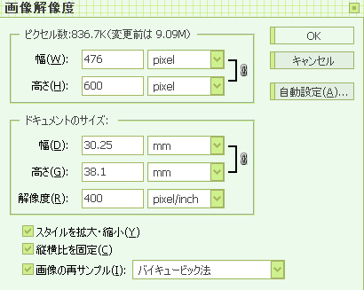

はーい。最後ですー。
色塗りがすべて終わったら保存します。
この辺キャプチャするのがめんどくさくなってきて画像が少ないです。
保存が終わったら、フォトショップにもっていきますー。

始めに縮小しますー。
色塗りしたのでサイズがおおきくなっているので、縮小した方がやりやすいからです。
まぁこの辺は好みでー。
あとは、いろいろ加工とかしますー。
トーンカーブかけたりレベル補正する程度ですが。
ちなみに覆い焼きやら、フィルタやらはやりません。正確にはできません(死
レイヤーは統合しないですー。めんどくさいので（え
なんかそれっぽく落ち着いたら、Web用に保存っていうので保存します。
てけとーに名前変更して終了。おつかれさまでしたー。
所要時間はどれくらいだろう。
大王かまいつつ、家事しつつ、ってかんじでだらだらやっていたので2日かかりました。
集中したら4、5時間くらい？
手間かかるな！
何か質問とかつっこみとかありましたら、お気軽にどぞー。
文章が意味不明だよ！っていうのは自分でよくわかってるよ！(ノД`)
前へ